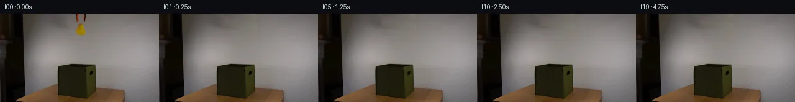
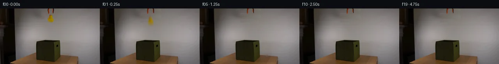
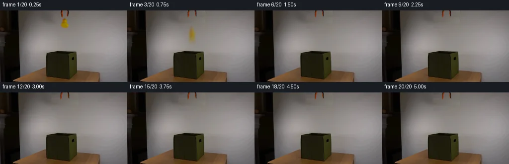
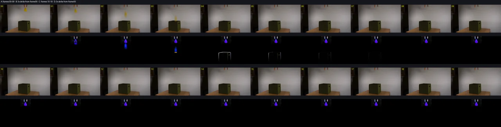

V0 · 初版
2026-11-06T08:09:07.595147+00:00 · RGB 3da36e067bcf
![]()
Observable Generation Trace
把最终像素视频、Harness 冻结的每轮候选、真实工具事件和 Agent 自述放在同一页。可观测证据与模型自述分开标记，避免把“模型说它检查过”误当成真实工具调用。
![首帧]()
Static locked-off single-shot with fixed frame throughout filmed with constant framerate in real-time. The scene shows a realistic scientific demonstration. The scene only contains the described setup and actions. An orange-black grabber tool is suspended above the open dark green fabric box on a wooden table. The orange-black grabber tool releases the yellow rubber duck above the open dark green fabric box.
首帧显示在左侧播放器初始画面。Track 权限、隔离和 tensor 一致性来自 run manifest，而不是 METHOD.md。
默认勾选初版和最终版；可选其他版本一起同步播放。仅检查图更新的连续重复快照已合并，回退旧视频仍保留为一次修订。
Observable events
来源：events.jsonl + run manifest
此 Track 禁止读取输出图片。逐轮预览由外部 Harness 自动冻结，只用于事后审计，生成 Agent 当时看不到这些页面。
Frozen candidates
每张图来自该 round 的真实 00 / 01 / 05 / 10 / 19 帧

pixels 9a1dfab8a9d8cec5 · code 3c448315f51edfb3
--- previous/generate.py
+++ current/generate.py
@@ -0,0 +1,269 @@
+#!/usr/bin/env python3
+"""PixelWorld case_0060.
+
+An orange-black grabber releases a yellow rubber duck above an open dark
+green fabric box. Locked-off camera, 20 frames @ 4 fps.
+
+Method (see METHOD.md for the narrative):
+ * sprites (duck, two prong arms) are cut from frame 0 with coverage alpha
+ recovered by color-unmixing against a modeled wall background;
+ * a clean wall plate is built per row by linear interpolation between two
+ clean anchor strips plus matched grain;
+ * the duck follows y = y0 + 1/2 g t^2 (g = 180 px/s^2), rendered as a
+ 5-stamp exposure-averaged motion streak with a small tumbling rotation,
+ clipped at the box front rim (occluded once inside the box);
+ * the prongs rotate open about their top pivots at release;
+ * impact at ~1.0 s makes the fabric box lean/wobble, pivoting at its base.
+Frame 00 is the untouched first frame.
+"""
+from pathlib import Path
+import shutil
+import numpy as np
+from PIL import Image
+
+import artifact_io
+
+CASE = Path(__file__).resolve().parent
+rng = np.random.default_rng(60060)
+
+first = np.array(Image.open(CASE / "first_frame.png").convert("RGB"))
+H, W, _ = first.shape
+f0f = first.astype(np.float32)
+
+R, G, B = f0f[..., 0], f0f[..., 1], f0f[..., 2]
+
+# ---------------------------------------------------------------------------
+# 1. Wall background model (valid across the small object zone, y 0..40)
+# ---------------------------------------------------------------------------
+LAX0, LAX1 = 104, 121 # left clean anchor strip
+RAX0, RAX1 = 139, 156 # right clean anchor strip
+
+_wall_cache = {}
+
+def wall_row(y):
+ """Smooth wall RGB for every x at row y (linear between anchors)."""
+ if y not in _wall_cache:
+ L = np.median(f0f[y, LAX0:LAX1], axis=0)
+ Rr = np.median(f0f[y, RAX0:RAX1], axis=0)
+ xs = np.arange(W, dtype=np.float32)
+ t = (xs - LAX1) / (RAX0 - LAX1)
+ _wall_cache[y] = L[None, :] * (1 - t[:, None]) + Rr[None, :] * t[:, None]
+ return _wall_cache[y]
+
+wall_bg = np.stack([wall_row(y) for y in range(0, 42)], axis=0) # 42xWx3
+
+plate = f0f.copy()
+noise = rng.normal(0, 2.1, size=(42, RAX1 + 1 - LAX0, 3)).astype(np.float32)
+for y in range(0, 37):
+ plate[y, LAX0:RAX1 + 1] = wall_bg[y, LAX0:RAX1 + 1] + noise[y]
+plate = np.clip(plate, 0, 255)
+
+# ---------------------------------------------------------------------------
+# 2. Sprite extraction with coverage alpha
+# ---------------------------------------------------------------------------
+def dilate(mask, it=1):
+ m = mask.copy()
+ for _ in range(it):
+ d = m.copy()
+ d[1:, :] |= m[:-1, :]; d[:-1, :] |= m[1:, :]
+ d[:, 1:] |= m[:, :-1]; d[:, :-1] |= m[:, 1:]
+ m = d
+ return m
+
+def extract(x0, y0, x1, y1, candidate, fg_color):
+ """Return float RGBA sprite cropped [y0..y1] x [x0..x1].
+
+ coverage a per pixel = median channel ratio (obs-bg)/(fg-bg)
+ over channels where |fg-bg| > 25; kept inside dilated candidate mask.
+ """
+ rgb = f0f[y0:y1 + 1, x0:x1 + 1].copy()
+ bg = wall_bg[y0:y1 + 1, x0:x1 + 1] if y1 < 42 else None
+ h, w, _ = rgb.shape
+ fg = np.zeros_like(rgb)
+ if callable(fg_color):
+ fg = fg_color(rgb)
+ else:
+ fg[:] = np.asarray(fg_color, np.float32)[None, None, :]
+ den = fg - bg
… diff truncated; 182 more lines …
pixels 44a28e937f3f6b50 · code ec98c57fc0cfb364
--- previous/generate.py
+++ current/generate.py
@@ -93,7 +93,7 @@
a = np.nanmedian(ratios, axis=2)
a = np.clip(np.nan_to_num(a, nan=0.0), 0, 1)
a *= dilate(candidate, 1).astype(np.float32)
- return np.concatenate([rgb, a[..., None]], axis=2).astype(np.float32)
+ return np.concatenate([rgb, (a * 255.0)[..., None]], axis=2).astype(np.float32)
# --- duck sprite: x121..138, y15..36 ---
dy0, dy1, dx0, dx1 = 15, 36, 121, 138pixels 44a28e937f3f6b50 · code ec98c57fc0cfb364
No generate.py text change in this frozen round.
Final visual checks
Harness 保存的最终产物


Agent claims
以下文字由生成 Agent 撰写，不等同于工具证据
first_frame.png, 256×144, numeric pixel analysis only)Gravity g = 180 px/s²; duck center y(t) = 25.5 + ½ g t². Floor contact inside box (center y≈118) at t ≈ 1.01 s, i.e. frame 4. Once below the front rim (y≈86) the duck is occluded by the opaque fabric front wall.
| frame | t (s) | event |
|---|---|---|
| 00 | 0.00 | Exact first_frame.png: closed grabber holding the duck above the open box. |
| 01 | 0.25 | Jaws swing open ~10° about their top pivots (one faint swing-ghost); duck released, center y≈31 (Δy 5.6), slight –6° tilt, short motion streak. |
| 02 | 0.50 | Duck center y≈48 (Δy 22.5), tilt –3°, vertical motion blur. |
| 03 | 0.75 | Duck center y≈76 (Δy 50.6), bottom reaches rim (y≈86), tilt +4°, blur streak plunging into the dark opening. |
| 04 | 1.00 | Duck fully inside box (below rim, hidden by front wall); impact: fabric box leans +1.1 px at rim with 0.8 px squash. |
| 05 | 1.25 | Wobble: lean –0.75 px. |
| 06 | 1.50 | Wobble: lean +0.30 px. |
| 07 | 1.75 | Wobble: lean –0.12 px. |
| 08–19 | 2.00–4.75 | Static settled scene: open grabber prongs, empty opening, duck at rest inside the box (out of sight). |
0xRRGGBB tensor.Task: locked-off single shot, orange-black grabber releases a yellow rubber duck
above an open dark green fabric box. 20 frames, 256×144, 4 fps (5 s). All work
done with local Python pixel operations (NumPy + Pillow) on first_frame.png;
no external models, engines, references, or image-view tools were used. Later
frames were checked only through numeric code (color masks, bbox/centroid
statistics, per-pixel deltas, tensor/PNG cross-checks).
Color masks and row scans of frame 0 located:
For rows 0–41 the wall background was modeled per row by linear interpolation between the medians of the two anchor strips, then resynthesized over x104–156 with Gaussian grain (σ = 2.1) matched to the measured wall noise. This erases the duck and prongs; vacated regions in later frames differ from the plate by ≤ ~1 level (verified numerically).
Three RGBA sprites were cut from frame 0:
Coverage α per pixel was recovered by color-unmixing: α = median over informative channels of (observed − wall)/(foreground − wall), clipped to 0–1, feathered with a 1-px dilation of a conservative color candidate mask, and stored at 0–255. Bilinear affine warps (Pillow) place and rotate sprites about arbitrary frame-space pivots.
frames/00.png is a byte copy of first_frame.png (exact equality asserted).0xRRGGBB tensor in pixels.npz plane-by-plane.index.html decodes to pixels identical to all
20 PNGs.inspection.png (artifact_io key-frame sheet) and transition_check.png
(20 frames plus 3× amplified delta-from-frame-0 heat maps) are written.